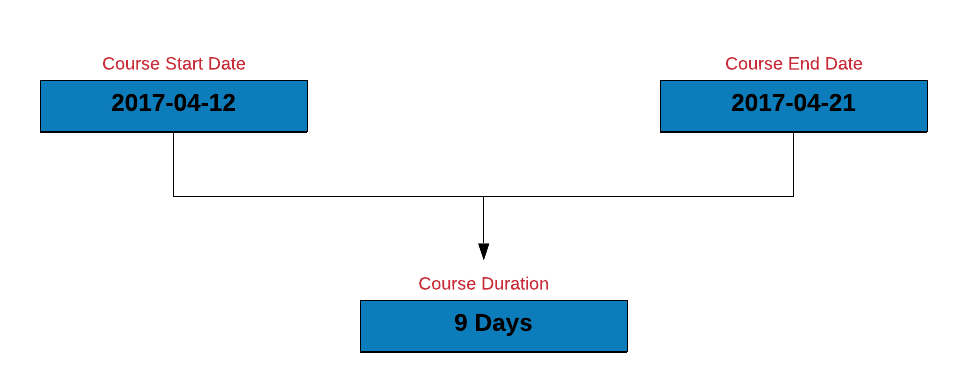
11 Date & Time: Arithmetic and Time Zones
This chapter continues @date-and-time-in-r. We do arithmetic with dates, compare durations, periods and intervals, handle time zones and DST, and round and roll back dates — including the receivables overdue case study.
11.1 Date Arithmetic
11.1.1 Introduction
Time to do some arithmetic with the dates. Let us calculate the length of a course you have enrolled for (Become a Rock Star Data Scientist in 10 Days) by subtracting the course start date from the course end date.
course_start <- as_date('2017-04-12')
course_end <- as_date('2017-04-21')
course_duration <- course_end - course_start
course_duration
## Time difference of 9 days11.1.2 Shift Date
Time to shift the course dates. We can shift a date by days, weeks or months. Let us shift the course start date by:
- 2 days
- 3 weeks
- 1 year
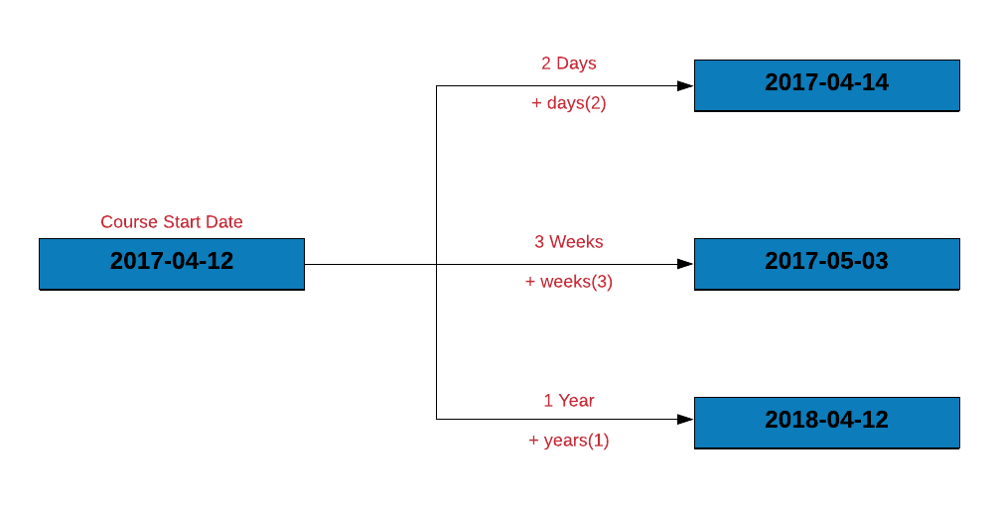
course_start + days(2)
## [1] "2017-04-14"
course_start + weeks(3)
## [1] "2017-05-03"
course_start + years(1)
## [1] "2018-04-12"11.1.3 Case Study
11.1.3.1 Compute days to settle invoice
Let us estimate the number of days to settle the invoice by subtracting the date of invoice from the date of payment.
transact |>
mutate(
days_to_pay = Payment - Invoice
)# A tibble: 2,466 × 4
Invoice Due Payment days_to_pay
<date> <date> <date> <drtn>
1 2013-01-02 2013-02-01 2013-01-15 13 days
2 2013-01-26 2013-02-25 2013-03-03 36 days
3 2013-07-03 2013-08-02 2013-07-08 5 days
4 2013-02-10 2013-03-12 2013-03-17 35 days
5 2012-10-25 2012-11-24 2012-11-28 34 days
6 2012-01-27 2012-02-26 2012-02-22 26 days
7 2013-08-13 2013-09-12 2013-09-09 27 days
8 2012-12-16 2013-01-15 2013-01-12 27 days
9 2012-05-14 2012-06-13 2012-07-01 48 days
10 2013-07-01 2013-07-31 2013-07-26 25 days
# ℹ 2,456 more rows11.1.3.2 Compute days over due
How many of the invoices were settled post the due date? We can find this by:
- subtracting the due date from the payment date
- counting the number of rows where delay < 0
transact |>
mutate(
delay = Due - Payment
) |>
filter(delay < 0) |>
mutate(
delay = delay * -1
) |>
count(delay)# A tibble: 36 × 2
delay n
<drtn> <int>
1 1 days 61
2 2 days 65
3 3 days 51
4 4 days 62
5 5 days 69
6 6 days 56
7 7 days 55
8 8 days 49
9 9 days 38
10 10 days 33
# ℹ 26 more rows11.1.4 Your Turn
- compute the length of a vacation which begins on
2020-04-19and ends on2020-04-25 - recompute the length of the vacation after shifting the vacation start and end date by
10days and2weeks - compute the days to settle invoice and days overdue from the
receivables.csvdata set - compute the length of employment (only for those employees who have been terminated) from the
hr-data.csvdata set (use date of hire and termination)
11.2 Time Zones
11.2.1 Introduction
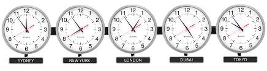
In the previous section, POSIXlt stored date/time components as a list. Among the different components it returned were
gmtoffzone
gmtoff is offset in seconds from GMT i.e. difference in hours and minutes from UTC. Wait.. What do UTC and GMT stand for?
- Coordinated Universal Time (UTC)
- Greenwich Meridian Time (GMT)
Since we are talking about UTC, GMT etc., let us spend a little time on understanding the basics of time zones and daylight savings.
11.2.2 Time Zones
Timezones exist because different parts of the Earth receive sun light at different times. If there was a single timezone, noon or morning would mean different things in different parts of the world. The timezones are based on Earth’s rotation. The Earth moves ~15 degrees every 60 minutes i.e. 360 degrees in 24 hours. The planet is divided into 24 timezones each 15 degrees of longitude width.
Now, you have heard of Greenwich Meridian Time (GMT) right? We just saw GMT off set in POSIXlt and you would have come across it in other time formats as well. For example, India timezone is given as GMT +5:30. Let us explore GMT in a little more detail. Greenwich is a suburb of London and the time at Greenwich is Greenwich Mean Time. As you move West from Greenwich, every 15 degree section is one hour earlier than GMT and every 15 degree section to the East is an hour later.
Alright! What is UTC then? Coordinated Universal Time (UTC) , on the other hand, is the time standard commonly used across the world. Even though they share the same current time, GMT is a timezone while UTC is a time standard.
So how do we check the timezone in R? When you run Sys.timezone(), you should be able to see the timezone you are in.
Sys.timezone()[1] "UTC"If you do not see the timezone, use Sys.getenv() to get the value of the TZ environment variable.
Sys.getenv("TZ")[1] "UTC"If nothing is returned, it means we have to set the timezone. Use Sys.setenv() to set the timezone as shown below. The author resides in India and hence the timezone is set to Asia/Calcutta. You need to set the timezone in which you reside or work.
Sys.setenv(TZ = "Asia/Calcutta")Another way to get the timezone is through tz() from the lubridate package.
lubridate::tz(Sys.time())[1] ""If you want to view the time in a different timezone, use with_tz(). Let us look at the current time in UTC instead of Indian Standard Time.
lubridate::with_tz(Sys.time(), "UTC")[1] "2026-10-02 11:13:28 UTC"11.2.3 Daylight Savings
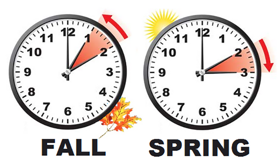
Daylight savings also known as
- daylight saving time
- daylight savings time
- daylight time
- summer time
is the practice of advancing clocks during summer months so that darkness falls later each day according to the clock. In other words
- advance clock by one hour in spring (spring forward)
- retard clocks by one hour in autumn (fall back)
In R, the dst() function is an indicator for daylight savings. It returns TRUE if daylight saving is in force, FALSE if not and NA if unknown.
dst(Sys.Date()) [1] FALSE11.2.4 Your Turn
- check the timezone you live in
- check if daylight savings in on
- check the current time in UTC or a different time zone
11.3 Intervals, Duration & Period
In this chapter, we will learn about
- intervals
- duration
- and period
11.3.1 Interval
An interval is a timespan defined by two date-times. Let us represent the length of the course using interval.
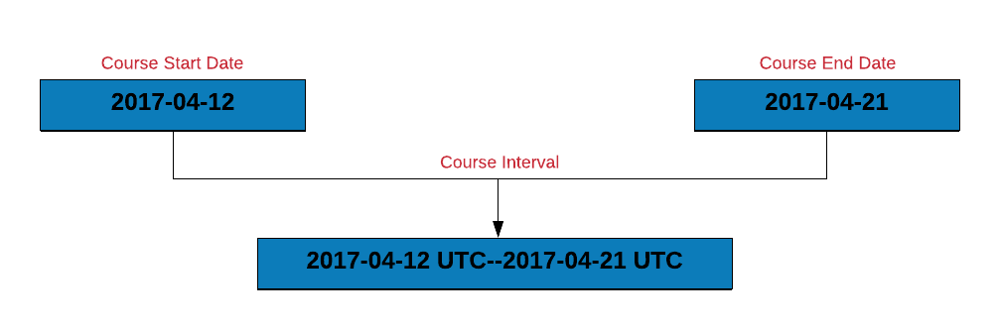
course_start <- as_date('2017-04-12')
course_end <- as_date('2017-04-21')
interval(course_start, course_end)[1] 2017-04-12 UTC--2017-04-21 UTCIf you observe carefully, the interval is represented by the course start and end dates. We will learn how to use intervals in the case study.
11.3.1.1 Overlapping Intervals
Let us say you are planning a vacation and want to check if the vacation dates overlap with the course dates. You can do this by:
- creating vacation and course intervals
- use
int_overlaps()to check if two intervals overlap. It returnsTRUEif the intervals overlap elseFALSE.
Let us use the vacation start and end dates to create vacation_interval and then check if it overlaps with course_interval.
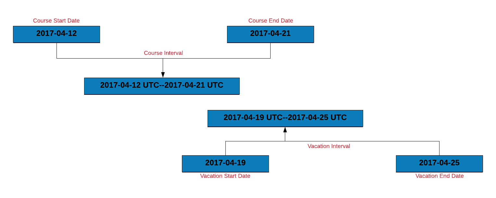
vacation_start <- as_date('2017-04-19')
vacation_end <- as_date('2017-04-25')
course_interval <- interval(course_start, course_end)
vacation_interval <- interval(vacation_start, vacation_end)
int_overlaps(course_interval, vacation_interval)
## [1] TRUE11.3.1.2 How many invoices were settled within due date?
Let us use intervals to count the number of invoices that were settled within the due date. To do this, we will:
- create an interval for the invoice and due date
- create a new column
due_nextby incrementing the due date by 1 day - another interval for
due_nextand the payment date - if the intervals overlap, the payment was made within the due date
transact |>
mutate(
inv_due_interval = interval(Invoice, Due),
due_next = Due + days(1),
due_pay_interval = interval(due_next, Payment),
overlaps = int_overlaps(inv_due_interval, due_pay_interval)
) |>
select(Invoice, Due, Payment, overlaps)# A tibble: 2,466 × 4
Invoice Due Payment overlaps
<date> <date> <date> <lgl>
1 2013-01-02 2013-02-01 2013-01-15 TRUE
2 2013-01-26 2013-02-25 2013-03-03 FALSE
3 2013-07-03 2013-08-02 2013-07-08 TRUE
4 2013-02-10 2013-03-12 2013-03-17 FALSE
5 2012-10-25 2012-11-24 2012-11-28 FALSE
6 2012-01-27 2012-02-26 2012-02-22 TRUE
7 2013-08-13 2013-09-12 2013-09-09 TRUE
8 2012-12-16 2013-01-15 2013-01-12 TRUE
9 2012-05-14 2012-06-13 2012-07-01 FALSE
10 2013-07-01 2013-07-31 2013-07-26 TRUE
# ℹ 2,456 more rowsBelow we show another method to count the number of invoices paid within the due date. Instead of using days to change the due date, we use int_shift to shift it by 1 day.
transact |>
mutate(
inv_due_interval = interval(Invoice, Due),
due_pay_interval = interval(Due, Payment),
due_pay_next = int_shift(due_pay_interval, by = days(1)),
overlaps = int_overlaps(inv_due_interval, due_pay_next)
) |>
select(Invoice, Due, Payment, overlaps)# A tibble: 2,466 × 4
Invoice Due Payment overlaps
<date> <date> <date> <lgl>
1 2013-01-02 2013-02-01 2013-01-15 TRUE
2 2013-01-26 2013-02-25 2013-03-03 FALSE
3 2013-07-03 2013-08-02 2013-07-08 TRUE
4 2013-02-10 2013-03-12 2013-03-17 FALSE
5 2012-10-25 2012-11-24 2012-11-28 FALSE
6 2012-01-27 2012-02-26 2012-02-22 TRUE
7 2013-08-13 2013-09-12 2013-09-09 TRUE
8 2012-12-16 2013-01-15 2013-01-12 TRUE
9 2012-05-14 2012-06-13 2012-07-01 FALSE
10 2013-07-01 2013-07-31 2013-07-26 TRUE
# ℹ 2,456 more rowsYou might be thinking why we incremented the due date by a day before creating the interval between the due day and the payment day. If we do not increment, both the intervals will share a common date i.e. the due date and they will always overlap as shown below:
transact |>
mutate(
inv_due_interval = interval(Invoice, Due),
due_pay_interval = interval(Due, Payment),
overlaps = int_overlaps(inv_due_interval, due_pay_interval)
) |>
select(Invoice, Due, Payment, overlaps)# A tibble: 2,466 × 4
Invoice Due Payment overlaps
<date> <date> <date> <lgl>
1 2013-01-02 2013-02-01 2013-01-15 TRUE
2 2013-01-26 2013-02-25 2013-03-03 TRUE
3 2013-07-03 2013-08-02 2013-07-08 TRUE
4 2013-02-10 2013-03-12 2013-03-17 TRUE
5 2012-10-25 2012-11-24 2012-11-28 TRUE
6 2012-01-27 2012-02-26 2012-02-22 TRUE
7 2013-08-13 2013-09-12 2013-09-09 TRUE
8 2012-12-16 2013-01-15 2013-01-12 TRUE
9 2012-05-14 2012-06-13 2012-07-01 TRUE
10 2013-07-01 2013-07-31 2013-07-26 TRUE
# ℹ 2,456 more rows11.3.1.3 Shift Interval
Intervals can be shifted too. In the below example, we shift the course interval by:
- 1 day
- 3 weeks
- 1 year
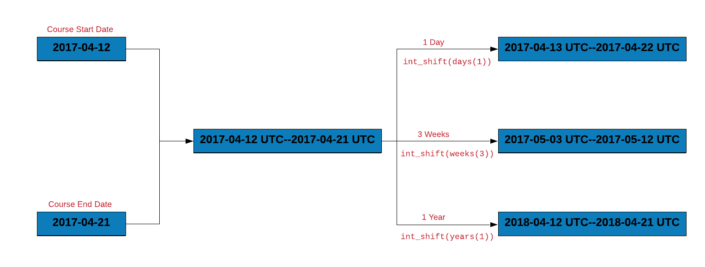
course_interval <- interval(course_start, course_end)
# shift course_interval by 1 day
int_shift(course_interval, by = days(1))
## [1] 2017-04-13 UTC--2017-04-22 UTC
# shift course_interval by 3 weeks
int_shift(course_interval, by = weeks(3))
## [1] 2017-05-03 UTC--2017-05-12 UTC
# shift course_interval by 1 year
int_shift(course_interval, by = years(1))
## [1] 2018-04-12 UTC--2018-04-21 UTC11.3.2 Within
Let us assume that we have to attend a conference in April 2017. Does it occur during the course duration? We can answer this using %within% which will return TRUE if a date falls within an interval.
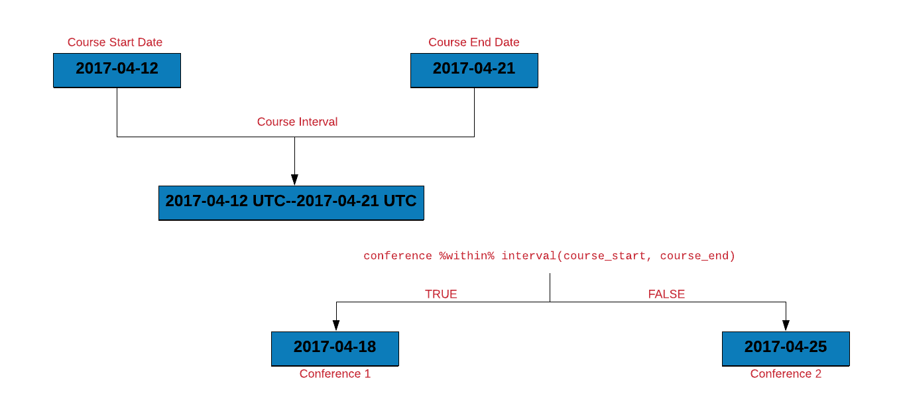
conference <- as_date('2017-04-15')
conference %within% course_interval
## [1] TRUE11.3.2.1 How many invoices were settled within due date?
Let us use %within% to count the number of invoices that were settled within the due date. We will do this by:
- creating an interval for the invoice and due date
- check if the payment date falls within the above interval
transact |>
mutate(
inv_due_interval = interval(Invoice, Due),
overlaps = Payment %within% inv_due_interval
) |>
select(Due, Payment, overlaps)# A tibble: 2,466 × 3
Due Payment overlaps
<date> <date> <lgl>
1 2013-02-01 2013-01-15 TRUE
2 2013-02-25 2013-03-03 FALSE
3 2013-08-02 2013-07-08 TRUE
4 2013-03-12 2013-03-17 FALSE
5 2012-11-24 2012-11-28 FALSE
6 2012-02-26 2012-02-22 TRUE
7 2013-09-12 2013-09-09 TRUE
8 2013-01-15 2013-01-12 TRUE
9 2012-06-13 2012-07-01 FALSE
10 2013-07-31 2013-07-26 TRUE
# ℹ 2,456 more rows11.3.3 Duration
Duration is timespan measured in seconds. To create a duration object, use duration(). The timespan can be anything from seconds to years but it will be represented as seconds. Let us begin by creating a duration object where the timespan is in seconds.
duration(50, "seconds")[1] "50s"Another way to specify the above timespan is shown below:
duration(second = 50)[1] "50s"As you can see, the output is same in both the cases. Let us increase the timespan to 60 seconds and see what happens.
duration(second = 60)[1] "60s (~1 minutes)"Although the timespan is primarily measured in seconds, it also shows ~1 minutes in the brackets. As the length of the timespan increases i.e. the number becomes large, it is represented using larger units such as hours and days. In the below examples, as the number of seconds increases, you can observe larger units being used to represent the timespan.
# minutes
duration(minute = 50)[1] "3000s (~50 minutes)"duration(minute = 60)[1] "3600s (~1 hours)"# hours
duration(hour = 23)[1] "82800s (~23 hours)"duration(hour = 24)[1] "86400s (~1 days)"The following helper functions can be used to create duration objects as well.
# default
dseconds()[1] "1s"dminutes()[1] "60s (~1 minutes)"# seconds
duration(second = 59)[1] "59s"dseconds(59)[1] "59s"# minutes
duration(minute = 50)[1] "3000s (~50 minutes)"dminutes(50)[1] "3000s (~50 minutes)"# hours
duration(hour = 36)[1] "129600s (~1.5 days)"dhours(36)[1] "129600s (~1.5 days)"# weeks
duration(week = 56)[1] "33868800s (~1.07 years)"dweeks(56)[1] "33868800s (~1.07 years)"Let us use the above helper functions to get the course length in different units.
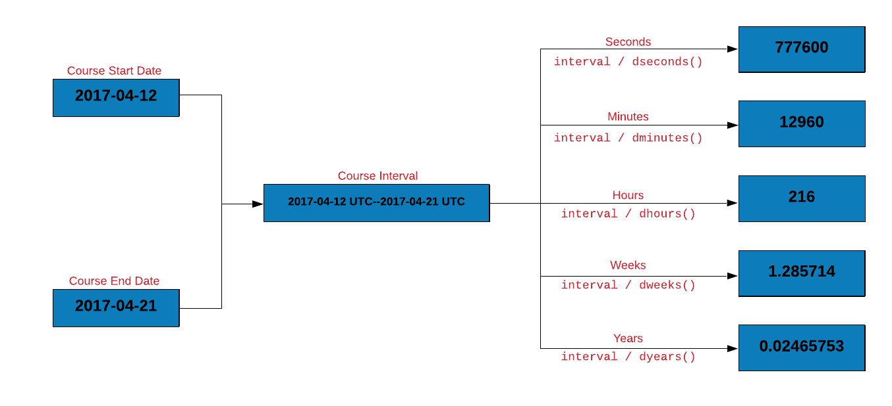
# course length in seconds
course_interval / dseconds()
## [1] 777600
# course length in minutes
course_interval / dminutes()
## [1] 12960
# course length in hours
course_interval / dhours()
## [1] 216
# course length in weeks
course_interval / dweeks()
## [1] 1.285714
# course length in years
course_interval / dyears()
## [1] 0.0246406611.3.4 Period
A period is a timespan defined in units such as years, months, and days. In the below examples, we use period() to represent timespan using different units.
# second
period(5, "second")[1] "5S"period(second = 5)[1] "5S"# minute & second
period(c(3, 5), c("minute", "second"))[1] "3M 5S"period(minute = 3, second = 5)[1] "3M 5S"# hour, minte & second
period(c(1, 3, 5), c("hour", "minute", "second"))[1] "1H 3M 5S"period(hour = 1, minute = 3, second = 5)[1] "1H 3M 5S"# day, hour, minute & second
period(c(3, 1, 3, 5), c("day", "hour", "minute", "second"))[1] "3d 1H 3M 5S"period(day = 3, hour = 1, minute = 3, second = 5)[1] "3d 1H 3M 5S"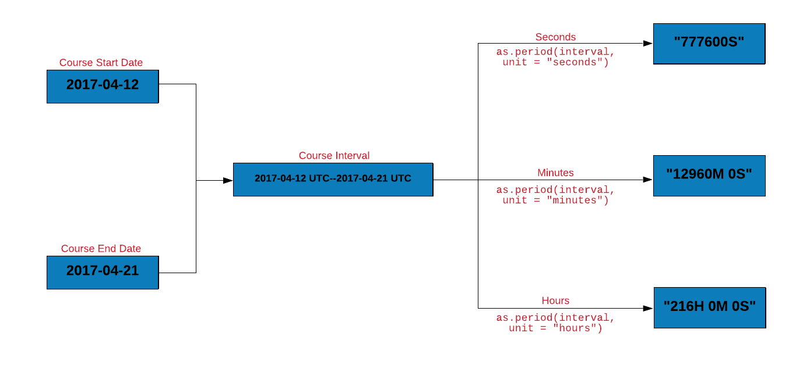
Let us get the course length in different units using as.period().
# course length in second
as.period(course_interval, unit = "seconds")
## [1] "777600S"
# course length in hours and minutes
as.period(course_interval, unit = "minutes")
## [1] "12960M 0S"
# course length in hours, minutes and seconds
as.period(course_interval, unit = "hours")
## [1] "216H 0M 0S"time_length() computes the exact length of a timespan i.e. duration, interval or period. Let us use time_length() to compute the length of the course in different units.
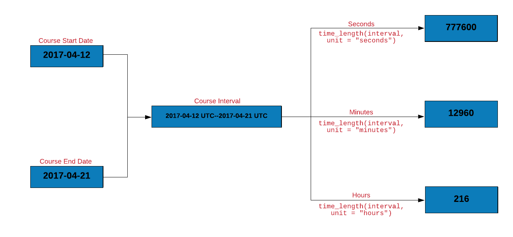
# course length in seconds
time_length(course_interval, unit = "seconds")
## [1] 777600
# course length in minutes
time_length(course_interval, unit = "minutes")
## [1] 12960
# course length in hours
time_length(course_interval, unit = "hours")
## [1] 21611.3.5 lubridate interval vs duration vs period
The three timespans answer different questions:
| Timespan | Answers | Clock behavior |
|---|---|---|
interval (%--%) |
When did it start and end? | Anchored to two endpoints |
duration (ddays(), dyears()) |
How many exact seconds? | Fixed 86,400 s/day, DST-blind |
period (days(), years()) |
How does the clock read? | Calendar-aware, follows DST |
The difference bites across daylight-saving boundaries. US clocks sprang forward on 2020-03-08, so that Sunday lasted 23 hours:
t <- ymd_hms("2020-03-07 12:00:00", tz = "America/New_York")
# period: same wall-clock time next day (noon stays noon)
t + days(1)[1] "2020-03-08 12:00:00 EDT"# duration: exactly 86,400 seconds later (lands at 1pm)
t + ddays(1)[1] "2020-03-08 13:00:00 EDT"Rule of thumb: scheduling and human arithmetic (invoice due in 30 days, days_to_pay in transact) → period; elapsed-time measurement and benchmarks → duration; anchoring and testing overlap (%within%, int_overlaps()) → interval.
11.4 Others
In this section, we will learn to round date/time to the nearest unit and roll back dates.
11.4.1 Rounding Dates
We will explore functions for rounding dates
- to the nearest value using
round_dates() - down using
floor_date() - up using
ceiling_date()
The unit for rounding can be any of the following:
- second
- minute
- hour
- day
- week
- month
- bimonth
- quarter
- season
- halfyear
- and year
We will look at a few examples using round_date() and you will then practice using the other two functions.
# minute
round_date(release_date, unit = "minute")[1] "2019-12-12 08:05:00 UTC"round_date(release_date, unit = "mins")[1] "2019-12-12 08:05:00 UTC"round_date(release_date, unit = "5 mins")[1] "2019-12-12 08:05:00 UTC"# hour
round_date(release_date, unit = "hour")[1] "2019-12-12 08:00:00 UTC"# day
round_date(release_date, unit = "day")[1] "2019-12-12 UTC"11.4.2 Rollback
Use rollback() if you want to change the date to the last day of the previous month or the first day of the month.
rollback(release_date)[1] "2019-11-30 08:05:03 UTC"To change the date to the first day of the month, use the roll_to_first argument and set it to TRUE.
rollback(release_date, roll_to_first = TRUE)[1] "2019-12-01 08:05:03 UTC"11.4.3 Your Turn
- round up the
transactdue dates to weeks - round down the
transactdue dates to days - rollback the
transactdue dates to the beginning of the month
Try it live
TipTry it in your browser
Edit the code below and press Run. It executes entirely in your browser via WebR — no R installation needed. The runtime downloads once, on this page only.